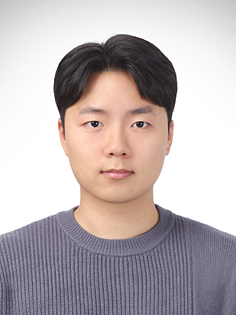

AI 연구원과 풀스택 개발자의 시선을 모두 가진,
기술의 언어와 사용자의 언어를 통역하는 PM 정환욱입니다.
성장 궤도를 따라 진화해온 저의 커리어 타임라인입니다.
각 노드를 클릭하면 프로젝트를 열람할 수 있습니다
언제든지 연락주세요. 함께 만들어갈 이야기를 기다립니다.

안녕하세요, 풀스택 개발과 AI 연구를 거쳐 PM으로 성장하고 있는 정환욱입니다. Django, Flutter로 백엔드, 프론트엔드 개발을 직접 경험하며 서비스를 제작하는 구조를 이해해 왔습니다. 동시에 다양한 AI 연구를 하며 기술의 가능성과 한계를 경험했습니다.
이러한 프로젝트들을 경험하면서 "어떻게 만들까" 보다는 "무엇을 왜 만들까"라는 질문에 더 끌리게 되었고, 프로젝트 전반을 설계하고 소통하며 조율하는 PM의 역할에 깊이 흥미를 느끼게 되었습니다.
2025년, INDEX 프로젝트에서 개발자, 디자이너와 함께 PM으로 참여하며 그 확신을 굳혔고, PM으로 성장 중입니다. 개발자의 시선에서 팀과 소통하고, 사용자의 시선에서 디자이너와 소통하며 서비스를 바라보는 PM의 역할이 제가 지향하는 방향성입니다.
감정 중심 도서 기록 서비스 INDEX는 독서 기록을 남기고 싶지만 단순한 별점이나 문장 기록이 아닌, 읽는 동안의 감정과 경험을 충분히 표현하고자 하는 사용자를 위해 기획한 서비스입니다. 사용자가 책을 읽으며 느낀 감정을 점수와 태그로 기록하고 감정을 기반으로 통계와 추천을 제공하는 특별한 독서 기록 공간을 제공합니다.
이미지 기반 알약 검색 서비스 약모야는 복용하고자 하는 약이 있거나 관리가 필요한 약이 있을 때 손쉽게 검색하고 관리할 수 있도록 도와주는 서비스입니다. 사진으로 알약을 검색하고, 복용 중인 알약들의 상호작용을 검사하여 보다 안전하고 확실한 약물 복용을 돕습니다.
질문기반 AI 구술 자서전 제작 서비스 메아리는 출판사 이분의일과의 협업을 통해 자서전을 쓰고 싶지만 어떻게 써야할지 막막한 사람들을 위해 누구나 쉽게 자신의 이야기를 기록할 수 있도록 돕는 서비스입니다. 사용자와의 대화를 통해 맞춤형 질문을 생성하고, 질문에 답하는 과정을 통해서 자연스럽게 개인의 삶에 대한 이야기를 풀어낼 수 있습니다.
수상: 2024겨울 종합설계 경진대회 장려상 (전체 37팀 중 7등)
Fashion_MNIST 데이터셋을 활용한 의류 이미지 분류 머신러닝 모델 선정 프로젝트. 이미지 분류 기능을 서비스에 적용 시 정확도와 처리 속도가 사용자 경험에 영향을 줄 수 있기 때문에 이를 기준으로 모델 분석을 진행했습니다. 단순 성능이 아닌 서비스 맥락의 의사결정 과정을 학습한 프로젝트.
아마추어 풋살 영상에서 선수와 공을 자동으로 탐지하여 데이터 기반 경기 분석이 가능하도록 하는 시스템 개발. 전문 장비 없이 일반 영상에 적용 가능한 알고리즘 개발을 목표로 했습니다.
YOLO를 사용하여 골프 자세 영상에서 사람의 관절 정보와 골프채의 움직임을 탐지하고, 연결시켜 시각화하는 프로젝트. 저비용으로 자세 분석이 가능하도록 관절과 골프채 위치를 자동으로 분석하는 알고리즘 개발을 목표로 했습니다.
생성형 AI의 발전과 함께 새롭게 등장한 GAN 알고리즘에서 모델의 성능을 개선할 수 있는 새로운 손실 함수의 가능성을 탐색하고 로그 기반 함수가 실제로 최적의 선택인지 검증하는 프로젝트. 이과대학 연구프로젝트 경진대회 우수상 수상.